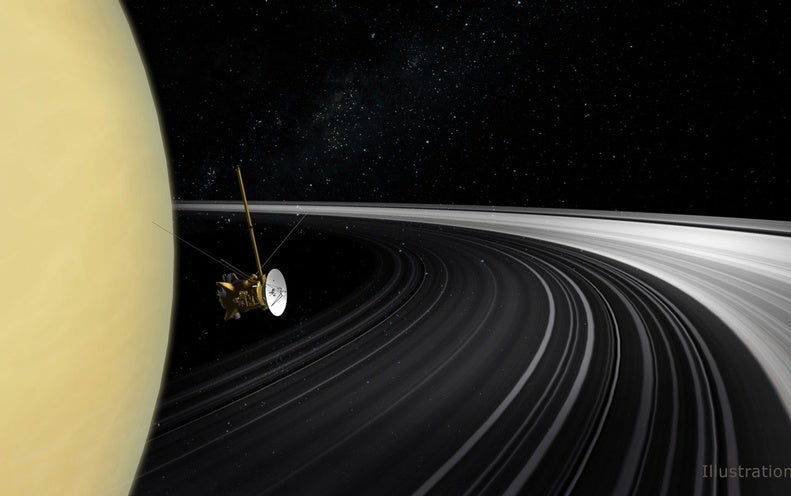
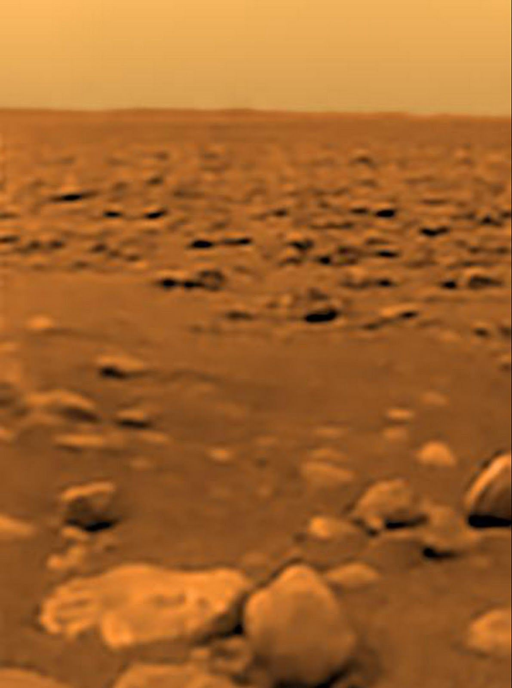

Saturn
Flying towards saturn puts a pit in your stomach, this planet is intimidating for some reason. As you get closer you realize you could just land on Saturn and begin to look around like you did on the moon but at the same time that pit in your stomach is telling you to fly around an observe but that could just waste time


Follow your gut or search the surface?